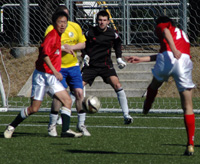
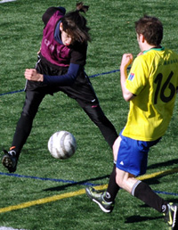
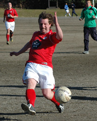

OLD STORIES - January 2009
Sala Harpooned By Celts At Sea World
Hachioji Park, Saturday 31st January
If only Sala could face FJ Plate opposition every week, and play on nice dry pitches, their current transitional phase would be a lot easier to come through. However, with a waterlogged pitch and a hungry Celts team eager to cement their place in the TML above Sala, there was to be no easy ride in this match. more ...
ST.
|  |
|
Shane were sent to their first defeat of the season by a very skillful El Diego |
A Game of Two Thirds
Hachioji Park, Saturday 31st January
Trying to break the habit of writing reports only when we don’t lose, but the match against the Hibs on Saturday night is worth reporting.
The Hachioji Park pitch was quite drenched, however the game was much more interesting than expected. more ...
HS.
Even Astro-turf Suffers in Saitama Rains
Hachioji Park, Saturday 31st January
24 hours. Lots can happen in 24 hours. I surely will never forget 31st January 2009. The day started with me scheduled to referee 2 matches at Hachioji from 9 am. Wake up to the most delightful winter weather Japan has to offer. The second of 2 consecutive days of freezing rain and window shaking winds. more ...
JS.
|
Alex led his Schoolmates to New Year 7's victory |
Farewell Alex Sahara. If I was a girl....
Hachioji Park, Saturday24th January
BFC said farewell to Alex Sahara whose final game for the club reflected all that the young dynamo is: cool, slick, forward thinking and very, very sexy. Alex has been at the club since he was 14 years old and this length of service actually grants him exclusive entrance to the OB's club, yet he's still, or was our youngest player. Arriving late for his final game, wearing a limited edition pair of Converse and a couple of Vivienne Westwood bags under his eyes form the night before, Sahara went about doing what he does best. Terrorising the opposition with his pace, hair band and metrosexual magic.... more ...
AH
Celts Tame the Lions
 |
|
Roppongi's finest couldn't catch Henry & the Kitbag |
Hachioji Park, Sunday 25th January
Celts started their Sunday evening with a bit of a scare when midfield maestro Henry decided to leave the kit bag outside the Citibank building in Roppongi while he popped upstairs to withdraw his match subs & pocket money for the night. On his return he found numerous police officers had surrounded the bag, cordoned off the immediate vicinity and were calling in the bomb squad to destroy the bag in a controlled explosion. Having negotiated his way out of the situation by basically picking up the bag and scarpering down the road with Tokyo’s finest in pursuit (cue the Benny Hill music), he managed to find his way to the rest of the lads and we made our way to the game. more ...
SY.
Frozen Nuts for Breakfast
Hachioji Park, Sunday 25th January
If the 6 am alarm clock and the 2-hour drive into darkest Saitama don't do it, if the stinging snow flurries and the express-delivery-from-Vladivostok winter wind don't do it, then the first slide tackle that sends several litres of ice-cold surface water through your shorts to give a rude awakening to your Nobby Stiles will definitely get you thinking "What the fcuk am I doing here?". more ...
TC.
Lions Caged but not Tamed
Fukuda Denshi, Sunday 18th January
BEFC went into this fixture pointless and on the back of some recent demoralizing defeats. Up against a Lions side, who on the back of a creditable draw with the Hibs the previous week, were looking up rather than down, the (imaginary) bookmakers gave the Embassy little hope. more ...
RH.
|  |
|
Alex Sahara, Captain of NSP, fires in a shot as they battle their way to victory in Footy Japan's New Year 7's. FULL STORY |
Babarians Pip Clash to the Post
Fukuda Denshi, January 19th
After trailing 4-1 at half time, the Clash fought back to 4-4 only for the Barbarians to snatch victory in the closing minutes.
On a fresh January afternoon at Fukuda Denshi the Barbarians opened the scoring midway through the first half when a solid shot from outside the box found its way in to the Clash goal. more ...
AW.
Mr Fan-Tats-Tic Sinks Embassy
Fukuda Denshi, Sunday 18th January
The Sunday late kick-off in Fukuda Denshi saw the bottom 2 clubs face each other, where a win for BEFC would mean them starting off their season in terms of points, and a win for Lions would mean a jump to the dizzy heights of mid-table, the least they expect with a game or 2 in hand. more ...
HS.
Lions call Dibs on Hibs
Hachioji Park, Monday 12th January
Despite winning the Div 2 title last year, Lions have had an under par 2008 that saw them win only 6 games out of 16, compared to the fine run in 2007 of 10 wins in 14 that led to securing the Season 5 title. more ...
HS.
|  |
|
Ian 'Frodo' Warner, had golry in his eyes, til this last minute effort hit the side netting! |
Vagabonds Go Dutch
Oi Dirty, Saturday 10th January
Pablo Pomares`s infant son has had trouble sleeping. Luckily for him his father knows from experience one place in Tokyo where the urge to sleep is overwhelming – a Vagabonds match. The little critter was out like a light seconds after the kick off, missing both goals and all the action of a game against the Dutch Embassy that ended in a 1-1 stalemate. more ...
GQ (Not the magazine).
French Feel BFC Six Appeal
YC&AC, Sunday 11th January
6-0 will do for starters. BFC's first TML game of the season could have ended in a cricket score after two horror penalties, a couple of missed sitters and some decent saves from French keeper Filet Mignon. more ...
AH.